How to build a space glider (not difficult)
First a few informations to read
On some systems (Linux KDE/Gnome and SGI IRIX 4dwm), there is a
program icon fuer "dune4kids", it looks something like this:
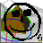
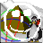
On systems like Micro$oft Windows or MacOSX there is only one (other)
programm icon:
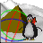
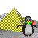
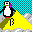
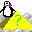
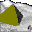
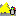
Normally, the program of this icon starts with the english full version,
usually with very much icons and too much menues.
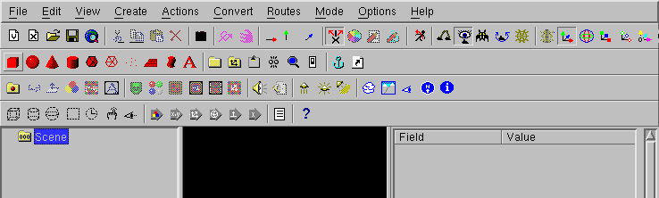
In this case, you have to switch to dune4kids.
You have to
click here to switch to the right version.
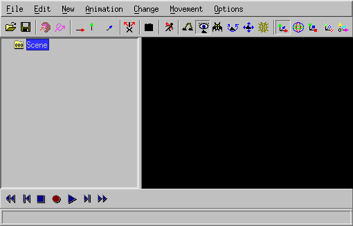
What to do, if the program crashes ?
With a bit of luck, you can load the last situation, if there is a
new ".dune_crash" file in the list of recent files.
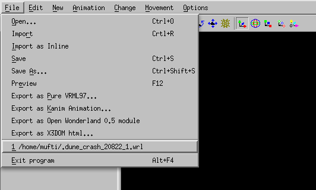
Navigation
Navigation means the movment in the 3D modell.
This is important, cause it can happen very easily, that you get inside or
behind your peace of work and see therefore nothing.
When you see nothing there are two way to continue, ofthen you use this
ways together:
- Move backwards
You can go forwards and backwards, if you press together the
left mouse button and the "Shift" key on the keyboard and move the
mouse up and down.
If you use "Examine" (when the icon 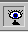 is pressed)
this also works with the middle button of a 3-button mouse.
If there is a mouse with a scroll wheel, you have to press the mouse
wheel.
- Turn the 3D world
If you press both the left mouse button and the "Control" key on the
keyboard and then move the mouse, the whole 3D world turns around.
Usually this is used to look all sides of a object, but als helps
if you are into the void.
Then content could be not only behind, but also left, right, up or
down.
You may need to turn around a lot to find your object.
Additionally there you can press together the left mouse button, the "Shift"
key and the "Control" key and move the mouse (or use the icon
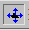). This results in the movement in direction
of the screen plane: up, down, left and right.
After you find the object and moved near to it, you should press again the
"Examine" icon in order to continue to work normally.
You should also select the object and press the icon
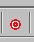, so you can turn the object as usual.
Icons for changes
In Order to show, how things are changed, a box is created.
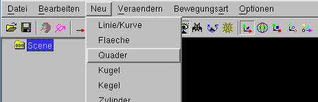
Icons, to changed whole objects:
- Move: 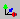
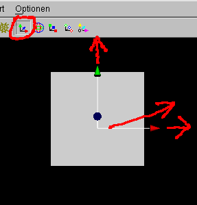
- Rotate: 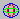
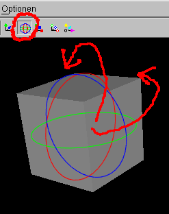
- Scale: 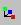
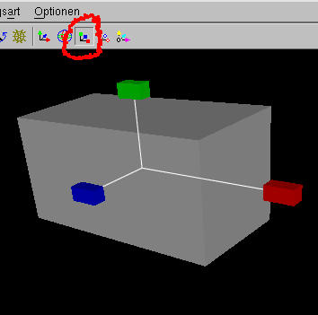
- uniform scale: 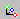

- move center of rotation: 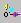
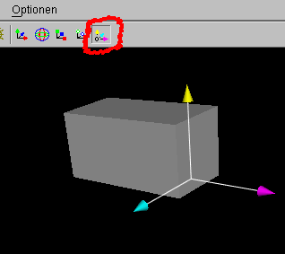
With small white boxes you can change the objects itself.
With the single arrow icons 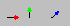 you can select the direction.
For example if only the green arrow is pushed,
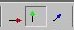 you can move the little box
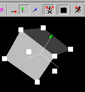
only into the direction of the green arrow.
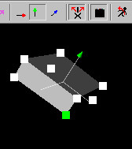.
In the same way as arrows grabed by the stem to move inside a plane,
you can also push two arrows 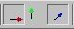 in one time
to move a little box in one plane.
How to build a glider model (not difficult)
You don't have to obey the following description exactly, but should
(at least at the first reading) stick to the clue.
It is important that Change -> X mirred modelling is alway
seletected.
Thw glider model will be constructed from a several parts: a torso with a
fin and airfoils.
Torso
The torso consists of a mathematical sphere.
You have to use New -> Sphere
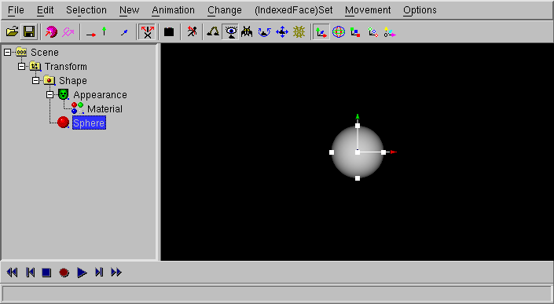
If "Sphere" is selected, you can change the radius of the sphere with the move of the
small white boxes (click to the small boxes, keep the mouse button pressed
and move the mouse)
Change -> Make deformable (NURBS)
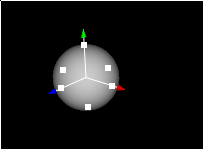
In the next window you can simply click "OK".
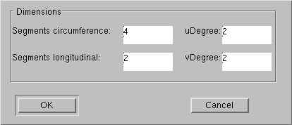
Despite the body itself did not change, the little boxes have been changed.
If you move a small box, the body can be changed more exactly (if you
moved now at a white box (only if you moved) you should use
Edit -> Undo, the box moves back).
The icon 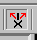 for
"X mirrored Modelling" should be pressed (you can change it with
ggf. mit Change -> X mirrored Modelling).
Click to the torso of the glider. White boxes will appear.
Now you turn your object in a way that you can select with the middle mouse
button (often: the mouse wheel) the small white boxes. The boxes change
their color into green.
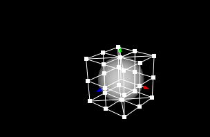
Now you need a calm hand to hit one of the little green boxes (press the
right mouse button) and move the mouse.
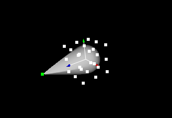
Now use New -> empty Group and move the Transform in the Group.
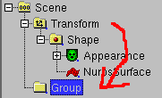
Select the NurbsSurface
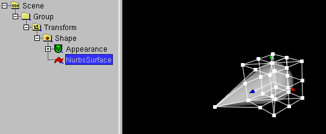
and use Change -> Rebuild controlpoints and press OK.
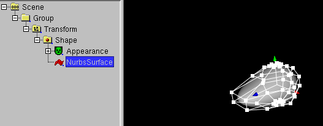
Fin
Use the right mouse button and drag a box on the front part of the glider
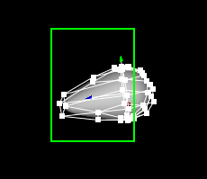
Use Selection -> Hide Vertices
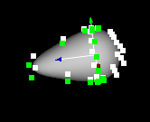
The number of vertices are reduced, you are not confused by vertices of the front
part of the glider.
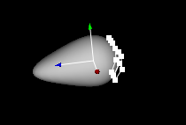
Navigate to see the glider from behind.
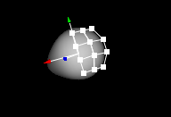
Select the the shown vertices with the middle mousebutton.
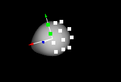
Use Change -> Scale selected points -> x and enter the
number 0.1
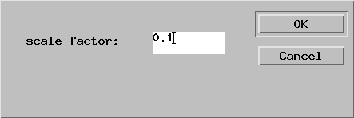
Next you have to selected the fin vertices and move the fin in the green direction.
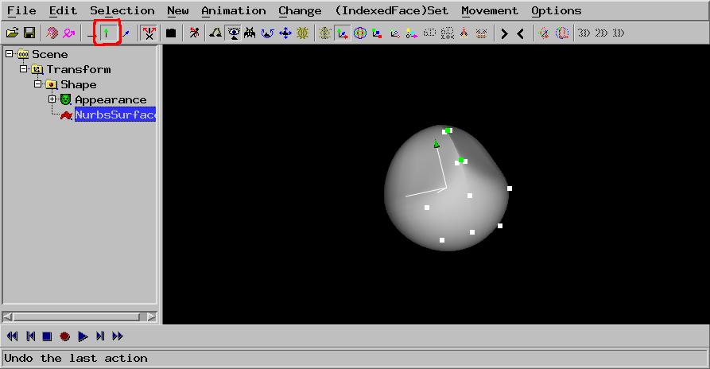
The form of the fin is changed with the move of the small white boxes.
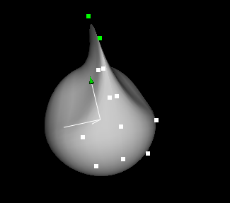
Navigate and restore the Movement -> y only (green) setting
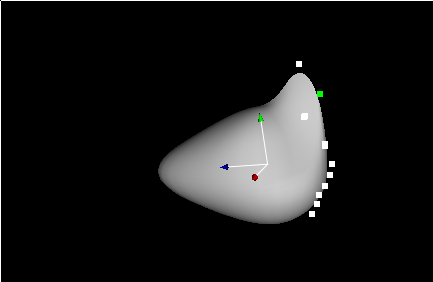
Now you can drag the fin vertices in both the y and z direction.
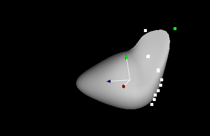
Airfoils
First select the Group.

Use New -> Sphere and click to the scale navigation.
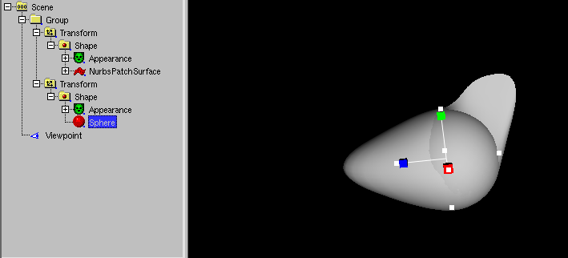
Use the scale navigation to increase x size and decrease y size.
Use Change -> Make deformable (NURBS)
And press OK
Use the right mouse button to drag the mouse and select a box aroud the outer
middle airfoil vertices.
Use Movement -> z only (blue) to restrict the movement to the z direction
and drag the boxes to a point near to the other boxes (but not wider...).
Now select the Group.
Now try (IndexedFace)Set -> Boolean Operations ->
Union (needs Group with two meshes). This can fail cause the airfoils needs
the be more in front. The reason of the fail is unknown, it has somthing to do with
internals of the used CGAL graphics library.
So move the airfoils forwards,

select Group
and try again (IndexedFace)Set -> Boolean Operations ->
Union (needs Group with two meshes).
The Group has been converted to a IndexedFaceSet.
Now select the Transform node.
Now use Change -> Set start values
to restore the orientation of the IndexedFaceSet.
Unfortunatly the vertices are visible.
Select the IndexedFaceSet and use Change -> Show (sometimes) numbers
and increase "creaseAngle"
Select "Scene"
and use New -> empty Group and move the Transform in the Group

Select the Group
Use New -> Sphere
Reset Movement -> z only (blue) and move the Sphere to a matching point.
Select a white box
and drag it, to change the radius.
Select the sphere and use Change -> Change to -> IndexedFaceSet.
Enter 8 and press OK.
Select Group
And use (IndexedFace)Set -> Boolean Operations ->
Union (needs Group with two meshes).
The Group has been converted to a IndexedFaceSet.

Now select the Transform node.
Now use Change -> Set start values
to restore the orientation of the IndexedFaceSet.
Select the IndexedFaceSet and use Change -> Show (sometimes) numbers
and increase "creaseAngle".
Use File -> Save As... to save to "something.x3dv".
The ".x3dv" is important to convert the modell to X3D, we need now a
X3D feature.
Select IndexedFaceSet and use New -> ColorRGBA
Now you need Selection -> Faces to selected the faces
that needs to be colored. Drag the mouse with the right button pressed
over the faces, you want to select. You can use Selection ->
Deselect if you accidently selected too much faces.
Now use Change -> Color (needs Material or Color or ColorRBGA)
-> Color per selected vertex (need Color or ColorRBGA),
a colorwheel will appear
Select the color and the needed transparency (with the lower slider) and press
OK.
Select Material (inside Apperance)
Use Change -> Color (need Material or Color or ColorRGBA) -> Gloss
and select a white color.
Select the Transform.
Use Animation -> Create Curve Animation (need Transform).
Enter Point 33 and select ring of the radio buttons.
A circle path of the animation will occure.
Select CurveAnimation1 and select all points by dragging a box with the mouse
right button pressed.
Use Change -> Scale selected points -> x (red)
and Change -> Scale selected points -> z (blue)
and enter 4 for each dialog.
The animation path is wider, but if you start the animation (with the
Play Animation icon ), the glider model is moved sidewards.
and rotation jumps at one point
Select Shape and use Change -> Swap -> x (red) and y (green)
.
Select CurveAnimation1 and use Change -> Change to ->
Standard interpolators (need CurveAnimation). Select
OrientaionInterpolator1
.
In the channel view, drag the last pink point a little bit up, to avoid
the small jump in the circle.
Your animation is ready. You can use File -> Preview to view
it in your Webgl enabled webbrowser
You can use e.g. File -> Export X3DOM html to export the file
into a HTML file, that can be edited with your favorite HTML editor.
With aqsis and mencoder (e.g. under Ubuntu Linux) you can create the
following video
rm -rf RibExport*.tif && run_dune_and_aqsis.sh
mencoder -o movie.mp4 "mf://untitled*.tif" -nosound -of lavf -lavfopts format=mp4 -ovc x264 -x264encopts pass=1:bitrate=2000:crf=24 -mf type=tif:fps=24